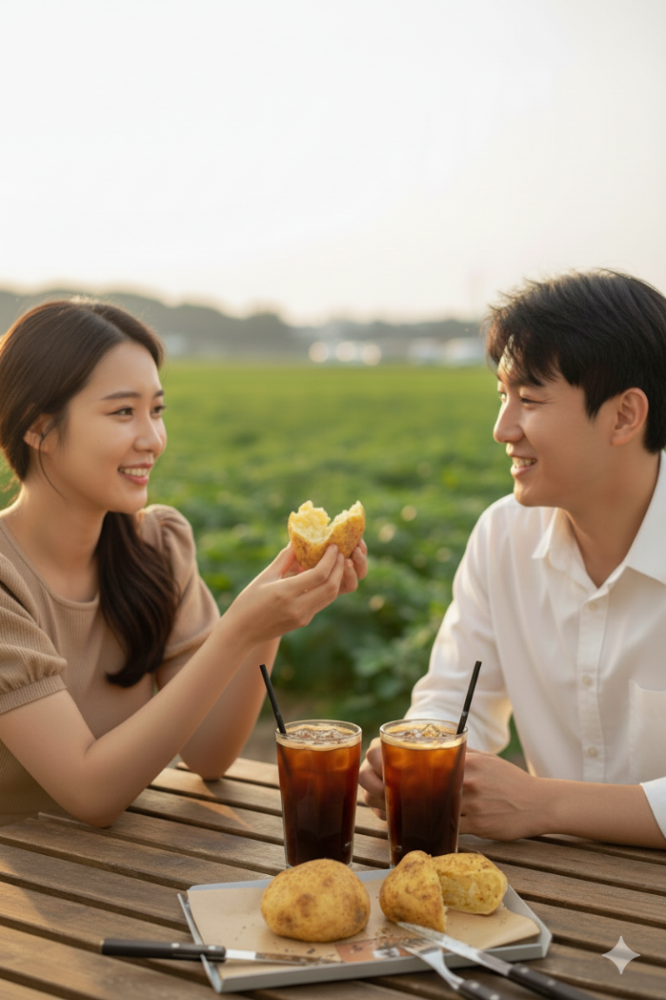
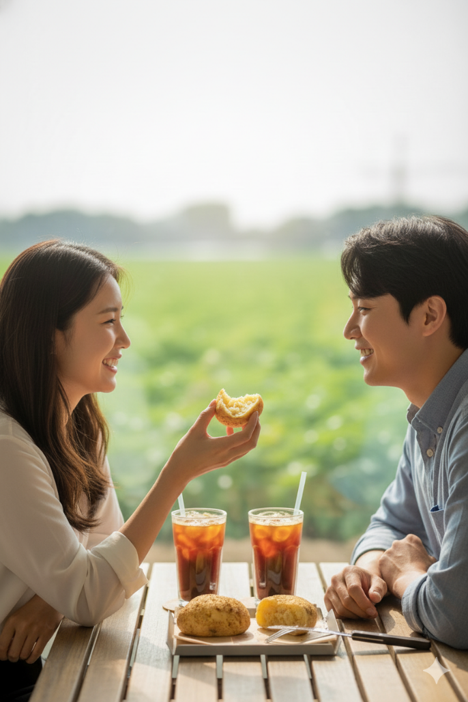
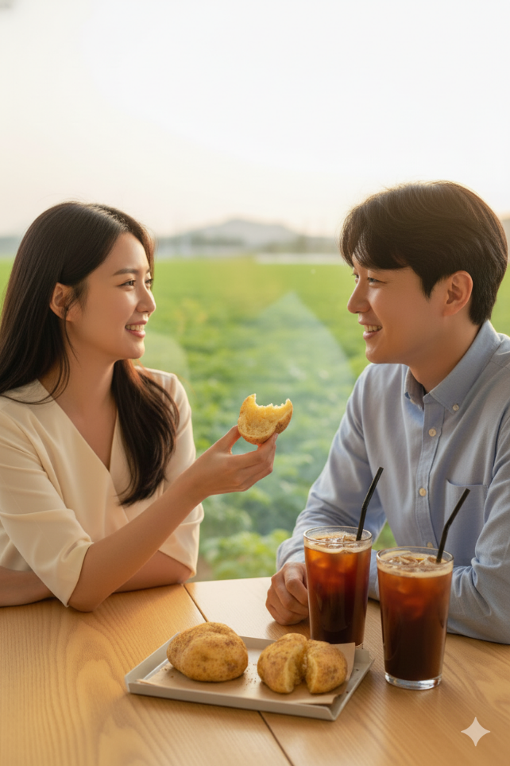

📝 프롬프트 작성 순서
카페의 배경과 디저트, 음료 사진을 준비합니다.
프롬프트 가이드에 맞춰 프롬프트를 작성합니다.
작성한 프롬프트를 Chat GPT, Gemini, Claude에 준비한 카페의 배경과 디저트, 음료 사진을 함께 넣어서 자세한 이미지 생성 프롬프트를 얻습니다.
⚠️ 작성 전 주의사항
- 카페 배경 사진: 정면 사진을 넣어주면 더 자연스러운 이미지 생성이 가능합니다
- 이미지 비율: 구글 AI 스튜디오(나노바나나)에 사진을 첨부할 때 두 번째 사진의 비율로 생성되므로 첨부 순서에 유의해야 합니다
📋 프롬프트 가이드
| 구분 | 내용 |
|---|---|
| 제안 | 다음은 카페의 사진을 생성하기 위한 프롬프트 가이드야. 프롬프트 가이드를 활용하여 만든 예시프롬프트도 아래에 제시했어. 가이드를 고려하여 더 나은 프롬프트를 한글과 영어로 제안해줘. 이미지를 생성하기에 참고할만한 이미지를 첨부했어. 참고해서 프롬프트 작성해줘. |
| 프롬프트 형식 | 주체, 배경 및 환경, 매체 및 스타일, 세부 묘사 및 특수 효과, 구도 및 앵글, 조명, 색상 및 분위기 |
| 주체 | 카페에서 한국인 남자여자 커플이 첨부한 사진의 감자빵과 아이스 아메리카노를 맛있게 먹고 있는 |
| 배경 및 환경 | 한국의 카페 창문이 크게 있고, 밖에 감자밭 풍경이 잘 보이는 |
| 매체 및 스타일 | 사실적 이미지 |
| 세부 묘사 및 특수효과 | 1080P 화질, 16:9 화면 비율 |
| 구도 및 앵글 | 구도는 정면 |
| 조명 | 채광과 카페의 밝은 조명 |
| 색상 및 분위기 | 즐겁고 맛있게 먹고 있는 분위기 |
✍️ 프롬프트 작성 예시 (Chat GPT, Gemini, Claude)
🔧 고정 프롬프트 가이드 (템플릿)
주체, 배경 및 환경, 매체 및 스타일, 세부 묘사 및 특수효과, 구도 및 앵글, 조명, 색상 및 분위기를 작성할 때는 홈페이지의 참고자료 탭을 참고해서 작성하는 것을 추천합니다.
| 구분 | 내용 |
|---|---|
| 제안 | 다음은 카페의 사진을 생성하기 위한 프롬프트 가이드야. 프롬프트 가이드를 활용하여 만든 예시프롬프트도 아래에 제시했어. 가이드를 고려하여 더 나은 프롬프트를 한글과 영어로 제안해줘. 이미지를 생성하기에 참고할만한 이미지를 첨부했어. 참고해서 프롬프트 작성해줘. |
| 프롬프트 형식 | 주체, 배경 및 환경, 매체 및 스타일, 세부 묘사 및 특수 효과, 구도 및 앵글, 조명, 색상 및 분위기 |
| 주체 | [ 원하는 상황(자세하게 설명할수록 더 좋음) ] |
| 배경 및 환경 | [ 첨부한 사진의 카페배경 ] |
| 매체 및 스타일 | 사실적 이미지 |
| 세부 묘사 및 특수효과 | [ 원하는 화질, 원하는 화면 비율 ] |
| 구도 및 앵글 | [ 원하는 구도와 앵글 ] |
| 조명 | [ 원하는 조명(예시 : 채광, 식당의 조명 등) ] |
| 색상 및 분위기 | [ 원하는 색상 및 분위기 ] |
🎯 프롬프트 결과 (AI별 비교)
🌿 한글 프롬프트 제안
주체: 카페 야외 테이블에서 감자빵과 아이스 아메리카노를 즐기는 한국인 커플
배경 및 환경: 감자밭이 보이는 춘천의 감자 테마 카페, 나무 테이블과 따뜻한 햇살이 비치는 평온한 오후 분위기
매체 및 스타일: 고해상도 사실적 사진 스타일, 자연광 포토그래피
세부 묘사 및 특수 효과: 감자빵의 질감과 속살이 잘 드러나며 김이 살짝 나는 디테일, 커피잔에 맺힌 물방울, 4K UHD 화질
구도 및 앵글: 테이블 위에서 커플이 감자빵을 나누며 웃고 있는 장면을 정면 혹은 약간 사선 구도로 촬영
조명: 따뜻한 자연광 + 은은한 반사광, 오후 햇살의 부드러운 그림자
색상 및 분위기: 따뜻한 베이지와 브라운 톤 중심, 편안하고 감성적인 분위기, 향긋한 커피향과 고소한 감자향이 느껴지는 장면
☕ English Prompt Suggestion
Subject: A Korean couple enjoying a potato bread and iced Americano at an outdoor café table
Background & Environment: A cozy potato-themed café in Chuncheon with a view of potato fields, wooden tables, and warm afternoon sunlight
Medium & Style: Realistic high-resolution photo style, natural light photography
Details & Effects: Detailed texture of the potato bread with a slightly steamy interior, condensation on the coffee cup, captured in 4K UHD
Composition & Angle: Front or slightly diagonal angle showing the couple sharing potato bread at the table with smiles
Lighting: Warm natural sunlight with soft reflected light and gentle afternoon shadows
Color & Mood: Warm beige and brown tones, cozy and heartwarming atmosphere evoking the aroma of coffee and baked potatoes
🇰🇷 한글 프롬프트
주체: 한국인 남자와 여자 커플이 마주 앉아 첨부된 사진 속 감자빵을 나눠 먹으며 행복하게 미소 짓고 있는 모습
배경 및 환경: 모던하고 따뜻한 분위기의 한국 카페 창가 테이블. 테이블 위에는 김이 나는 따뜻한 감자빵과 시원한 아이스 아메리카노 두 잔이 놓여 있고, 창밖으로는 햇살 가득한 초록빛 감자밭 풍경이 펼쳐져 있는
매체 및 스타일: 매우 사실적인 질감과 디테일이 살아있는 실사 사진 스타일
세부 묘사 및 특수 효과: 1080P 고화질, 16:9 화면 비율
구도 및 앵글: 인물과 음식에 초점을 맞춘 클로즈업 샷, 살짝 위에서 아래를 내려다보는 하이 앵글
조명: 창문으로 들어오는 부드러운 자연광과 카페 내부의 따뜻하고 은은한 간접 조명이 조화롭게 어우러진
색상 및 분위기: 전체적으로 밝고 생동감 있는 색감, 즐겁고 편안한 데이트의 따뜻하고 아늑한 분위기
🇺🇸 English Prompt
Subject: A Korean couple (man and woman) sitting opposite each other, happily smiling and sharing the potato bread from the attached photo.
Background & Environment: A window table in a modern and cozy Korean cafe. On the table, there is warm, steaming potato bread and two glasses of iced americano. Outside the window, a sunlit, green potato field unfolds.
Medium & Style: A photorealistic style with highly realistic textures and vivid details.
Detailed Description & Special Effects: 1080P high definition, 16:9 aspect ratio.
Composition & Angle: A close-up shot focusing on the couple and the food, from a slightly high-angle perspective looking down.
Lighting: A harmonious blend of soft natural light coming through the window and the warm, subtle indirect lighting of the cafe interior.
Color & Atmosphere: An overall bright and vibrant color palette, creating a warm, cozy, and joyful atmosphere of a relaxed date.
🇰🇷 개선된 프롬프트 (한글)
주체: 20-30대 한국인 커플이 테이블에 놓인 황금빛 겉면에 후추가 뿌려진 바삭한 감자빵(속이 하얗고 폭신한 구조가 보이는)과 투명한 유리잔에 담긴 아이스 아메리카노를 함께 나누며 미소 짓고 있는 장면
배경 및 환경: 넓은 통창이 있는 모던한 한국 카페 인테리어, 창밖으로 푸른 감자밭과 하늘이 시원하게 펼쳐진 전원 풍경, 원목 테이블과 심플한 화이트 플레이팅
매체 및 스타일: 자연스러운 라이프스타일 포토그래피, 푸드 포토그래피 기법을 활용한 사실적 이미지
세부 묘사 및 특수 효과: 1080P 고해상도, 16:9 비율, 감자빵의 바삭한 질감과 내부의 부드러운 결이 살아있는 디테일, 아이스 아메리카노의 얼음과 응축된 물방울이 보이는 생동감
구도 및 앵글: 정면에서 약간 높은 각도(45도), 커플과 음식이 모두 프레임 안에 균형있게 배치, 전경에 감자빵 클로즈업, 중경에 커플, 후경에 창밖 풍경
조명: 창문으로 들어오는 부드러운 자연광(골든아워 느낌)과 카페 실내의 따뜻한 조명이 조화를 이루는 밝고 깨끗한 분위기
색상 및 분위기: 감자빵의 황금빛 컬러를 강조, 따뜻한 베이지-브라운 톤과 시원한 그린 톤의 대비, 행복하고 여유로운 데이트 분위기
🇺🇸 Improved Prompt (English)
Subject: A Korean couple in their 20s-30s sharing and enjoying golden-brown potato bread with pepper seasoning (showing fluffy white interior texture) and iced Americano in clear glasses on a wooden table, smiling warmly at each other
Background & Environment: Modern Korean café interior with large panoramic windows, scenic view of lush green potato fields and sky outside, minimalist wooden table with simple white ceramic plates and cutlery
Medium & Style: Natural lifestyle photography combined with professional food photography techniques, photorealistic rendering
Details & Special Effects: 1080P high resolution, 16:9 aspect ratio, crispy texture of potato bread exterior and soft fluffy crumb structure clearly visible, condensation droplets on iced Americano glass for freshness
Composition & Angle: Front-facing shot with slightly elevated angle (45 degrees), balanced composition with potato bread in foreground, couple in mid-ground, and window view in background, rule of thirds applied
Lighting: Soft natural window light with golden hour quality blending with warm café interior lighting, creating a bright and inviting atmosphere with gentle shadows
Color & Mood: Emphasizing the golden-brown tones of potato bread, warm beige-brown palette contrasting with cool green tones from outdoor scenery, cheerful and relaxed café date atmosphere, appetizing and inviting mood
🌟 프롬프트 작성 예시 (나노바나나)
- 추가 요청: 프롬프트에 나와있는 반영사항 중 추가로 요청할 경우 DeepL을 이용하여 영어로 번역하여 내용을 추가하면 됩니다
- 화질 조정: Chat GPT, Gemini, Claude의 프롬프트의 경우 화질 설정이 4K 고화질이기 때문에 화질은 1080P로 변경해도 상관없습니다
🎨 생성형 AI 프롬프트 나노바나나 결과물
위의 프롬프트를 나노바나나에 입력하여 생성된 이미지입니다.
📷 Chat GPT 프롬프트 결과

📷 Gemini 프롬프트 결과

📷 Claude 프롬프트 결과

🎉 카페 이미지 생성 가이드 완료!
이 가이드를 따라 매력적인 카페 이미지를 생성해보세요.
- 준비: 카페 배경, 디저트, 음료 사진 준비
- 작성: 가이드에 맞춰 프롬프트 작성
- 개선: AI 도구로 상세 프롬프트 생성
- 생성: 나노바나나로 최종 이미지 생성
- 카페 배경 사진은 정면에서 촬영한 것을 사용하세요
- 나노바나나에서 두 번째 사진의 비율로 생성되므로 순서에 주의하세요
- 디테일을 자세히 설명할수록 더 좋은 결과를 얻을 수 있습니다
- 홈페이지의 참고자료 탭을 활용하여 프롬프트를 작성하세요